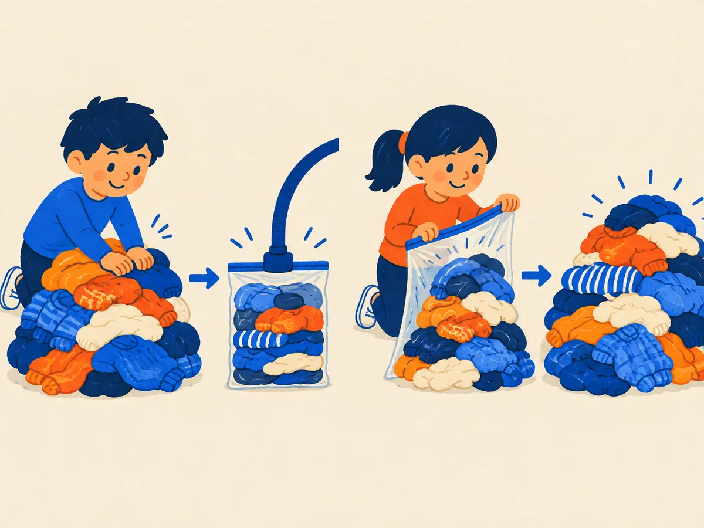

Autoencoders & representation learning
Train a network to copy its input through a narrow middle, and it has to discover what matters about the data. That's an autoencoder. The idea runs from 1980s toy networks to the VAE that compresses every image in Stable Diffusion, the codecs that turn speech into tokens, and the sparse autoencoders used to read an LLM's mind.
By the end you can
- Describe encoder, bottleneck, decoder and reconstruction loss, and explain why PCA is a linear autoencoder.
- Explain denoising autoencoders and how they lead to masked modelling and self-supervised learning.
- Write a VAE's loss, explain the reparameterization trick, and name three places autoencoders run inside today's models.
Guess first. A wrong guess now makes the right answer stick.
An autoencoder is trained to output exactly its input. Why doesn't it just learn to copy?
- Copying is forbidden by the loss function
- It's trained on labels, not on the input
- The input must pass through a much smaller "bottleneck", so it can only keep the most useful information
- It does learn to copy, and that's the point
Stable Diffusion doesn't run its diffusion model on a 512×512 image directly. What does it work on?
- A 64×64×4 latent made by an autoencoder
- The text prompt only
- A 512×512 grayscale copy
- A list of object labels
Squeeze and rebuild: the autoencoder
In 1986, Rumelhart, Hinton & Williams showed backpropagation learning an "encoder problem": pass 8 one-hot patterns through just 3 hidden units and reproduce them at the output. The network invented a 3-bit binary code on its own. Twenty years later, Hinton & Salakhutdinov (2006, "Reducing the Dimensionality of Data with Neural Networks") trained a deep version, 784 → 1000 → 500 → 250 → 30 → back up to 784 pixels, and got far better reconstructions of handwritten digits than PCA with the same 30 numbers.
Every autoencoder has three parts:
- An encoder $e$ maps the input $x$ to a code (or latent) $z = e(x)$.
- A bottleneck: $z$ is much smaller than $x$ (or otherwise constrained), so it can't hold everything.
- A decoder $d$ maps the code back, $\hat{x} = d(z)$.
Training minimises a reconstruction loss, most simply the mean squared error over the $n$ numbers in $x$:
$$\mathcal{L}_{\text{rec}} = \frac{1}{n}\sum_{j=1}^{n} \big(x_j - \hat{x}_j\big)^2$$No labels are needed: the data is its own target. That makes autoencoders an early example of self-supervised learning, and the code $z$ is a learned representation: inputs that are similar in ways the decoder needs end up with nearby codes.
Explain like I'm 5

One child has a huge pile of clothes and a small vacuum bag. They squeeze the air out until everything fits in the little bag. That's the encoder making a small code.
Another child opens the bag, and the clothes puff back out, almost as before. That's the decoder. The smaller the bag, the more carefully you have to pack, keeping what matters and leaving out what doesn't.
Where it breaks: a vacuum bag keeps every sock. An autoencoder really throws information away, so the rebuilt version is a good guess, not the original, and it learns how to pack only from practice on many similar piles.
Worked example
A 4-pixel input $x = [1, 0, 1, 1]$ comes back as $\hat{x} = [0.9, 0.2, 0.8, 1.0]$.
- Errors: $0.1,\ -0.2,\ 0.2,\ 0$
- Squared: $0.01,\ 0.04,\ 0.04,\ 0$, which sum to $0.09$
- Mean: $0.09 / 4 = 0.0225$ ✓
- $x = [0, 1, 1, 0]$, $\hat{x} = [0.1, 0.7, 0.9, 0.3]$. Sum of squared errors:
- Mean squared error:
- A 28×28 image squeezed into a 32-number code: how many times fewer numbers? (one decimal)
What is the training target of a plain autoencoder?
- A class label for each input
- The input itself
- The code $z$
- Random noise
From PCA to denoising autoencoders
Take the simplest autoencoder: a linear encoder $z = W_e x$ with $k$ outputs, a linear decoder $\hat{x} = W_d z$, no activations, and the squared-error loss. Its best possible solution is already known from statistics: the decoder's columns span the same $k$-dimensional subspace as the top $k$ principal components of the data (Bourlard & Kamp, 1988; Baldi & Hornik, 1989). The weights need not be the exact principal directions (any rotation within that subspace works equally well), but the reconstructions are identical to PCA's.
That gives a clean way to see what the nonlinearities buy. PCA can only keep a flat slice of the data: project 2-D points onto the best line, 3-D points onto the best plane. Real data, such as images of digits or faces, lies near curved surfaces. A deep autoencoder with ReLUs (P3.1) can learn a curved "sheet" through the data, which is why Hinton & Salakhutdinov's 30-number codes reconstructed digits so much better than 30 principal components. Without the nonlinearities, adding layers wouldn't help at all: stacked linear layers collapse into one.
Denoising: the road to self-supervised learning
A big enough autoencoder can still cheat by learning something close to the identity. Vincent, Larochelle, Bengio & Manzagol (2008, "Extracting and Composing Robust Features with Denoising Autoencoders") changed the task: corrupt the input, for example by setting a random fraction of pixels to zero, and train the network to output the clean original. Copying is now useless. To fill in the gaps, the network has to learn how the data hangs together: strokes continue, edges line up, a face has two eyes.
That recipe, "hide part of the data and predict it", turned out to be one of the most powerful ideas in modern AI:
- BERT (Devlin et al., 2018) masks 15% of the tokens in a sentence and predicts them. It's a denoising autoencoder for text.
- Masked autoencoders (MAE; He et al., 2021) hide 75% of an image's patches and reconstruct the missing pixels (V1.3).
- Diffusion models learn to remove noise step by step: denoising, repeated (G1.3).
- Even GPT-style next-token prediction is self-supervised in the same spirit: the "hidden part" is the next token.
A second family skips reconstruction entirely. Contrastive learning trains an encoder so that two views of the same thing (two crops of one photo, or a photo and its caption) get similar codes while different things get different codes: SimCLR (Chen et al., 2020), CLIP (Radford et al., 2021; V1.2). Either way, the goal is the same as the autoencoder's: a representation learned without labels that later tasks can build on, just as word embeddings (P3.4) are.
Why does a denoising autoencoder learn better features than a plain one?
- It can't succeed by copying; it must learn the data's structure to restore what the corruption removed
- It has a smaller bottleneck
- It uses labels for the corrupted parts
- Noise makes training faster
Variational autoencoders: a latent space you can sample
A plain autoencoder's codes can be scattered anywhere, with gaps between them. Pick a random point in a gap, decode it, and you usually get garbage. So you can't use it to generate new data. The variational autoencoder (VAE; Kingma & Welling, 2013, "Auto-Encoding Variational Bayes"; Rezende, Mohamed & Wierstra, 2014) fixes this with two changes:
- The encoder outputs a distribution, not a point: a mean $\mu$ and a standard deviation $\sigma$ for each latent dimension (in practice it outputs $\log \sigma^2$).
- The loss adds a term that pulls each of those distributions toward a standard normal prior $\mathcal{N}(0, 1)$.
To train through the random sampling step, the VAE uses the reparameterization trick:
$$z = \mu + \sigma \odot \epsilon, \qquad \epsilon \sim \mathcal{N}(0, I)$$All the randomness lives in $\epsilon$, which doesn't depend on any weights, so gradients flow normally through $\mu$ and $\sigma$ back into the encoder. The loss per example is
$$\mathcal{L} = \mathcal{L}_{\text{rec}}\big(x, d(z)\big) + \mathrm{KL}\big(\mathcal{N}(\mu, \sigma^2)\,\|\,\mathcal{N}(0, 1)\big), \qquad \mathrm{KL} = \tfrac12 \sum_{j}\big(\mu_j^2 + \sigma_j^2 - \ln \sigma_j^2 - 1\big)$$The KL divergence (P1.6) is zero only when $\mu = 0$ and $\sigma = 1$. It's the price of a code that is too far from the prior or too precise. The two terms pull against each other: reconstruction wants every input to have its own sharp, distinct code; KL wants all codes to overlap near the origin. The compromise is a smooth, gap-free latent space: nearby points decode to similar outputs, and sampling $z \sim \mathcal{N}(0, I)$ and decoding gives new, plausible data. (The full derivation, as a bound on the data's log-likelihood, is in G1.1, building on the latent-variable ideas of P5.2.)
Try it: walk around a latent space
Drag the dot (or use the sliders) to pick a code $z = (z_1, z_2)$ and see what it decodes to. Small shapes in the background show the decoding at a grid of points; blue dots are training codes. This "decoder" is a hand-written formula that blends four shapes, not a trained network, but it behaves the way real latent spaces do.
Worked example
KL term for one latent dimension:
- $\mu = 1$, $\sigma = 1$: $\tfrac12(1 + 1 - \ln 1 - 1) = \tfrac12(1) = 0.5$. Shifting the mean costs.
- $\mu = 0$, $\sigma = 0.5$: $\tfrac12(0 + 0.25 - \ln 0.25 - 1) = \tfrac12(0.25 + 1.386 - 1) = 0.318$. Being too sure costs too.
- KL for $\mu = 2$, $\sigma = 1$:
- KL for $\mu = 0$, $\sigma = 1$:
- With $\mu = 0.5$, $\sigma = 2$ and a sampled $\epsilon = -1$, the code is $z =$
What does the reparameterization trick $z = \mu + \sigma \odot \epsilon$ achieve?
- It removes randomness from the VAE entirely
- It makes the KL term zero
- It moves the randomness into $\epsilon$, so gradients can flow through $\mu$ and $\sigma$ to the encoder
- It makes the latent space discrete
Where autoencoders live today
Autoencoders are rarely the headline model any more, but they are working parts inside many headline models:
- Latent diffusion. Rombach et al. (2022, "High-Resolution Image Synthesis with Latent Diffusion Models") first train an autoencoder (KL-regularised like a VAE, plus perceptual and adversarial losses for sharpness), then run diffusion on its latents. Stable Diffusion's VAE downsamples 8× in each direction: a $512 \times 512 \times 3$ image (786,432 numbers) becomes a $64 \times 64 \times 4$ latent (16,384 numbers), 48× fewer. Many newer image models keep the 8× downsampling but use 16 latent channels, and video models compress time as well (G1.4).
- Neural audio codecs. SoundStream (Zeghidour et al., 2021) and EnCodec (Défossez et al., 2022) are convolutional autoencoders whose bottleneck is quantized into discrete codes, in the spirit of the VQ-VAE (van den Oord et al., 2017). EnCodec's 24 kHz model turns audio into 75 frames per second at 1.5 to 24 kilobits per second. Those codes are the "audio tokens" that speech and music language models predict (A1.3).
- Sparse autoencoders for interpretability. Here the bottleneck is flipped: the code is much wider than the input (e.g. 16× or more), but only a few code entries may be non-zero at once. Trained on an LLM's internal activations, the code entries often line up with human-readable concepts (Bricken et al., 2023; Cunningham et al., 2023; Templeton et al., 2024, up to about 34 million features on a production model). See IN.1 and IN.3.
How does a sparse autoencoder used in interpretability differ from a classic autoencoder?
- It has no decoder
- Its code is wider than the input, and the constraint is sparsity (few active entries) instead of a narrow bottleneck
- It's trained on labelled images
- Its code is always 2-dimensional
What does an autoencoder learn, and what does a VAE add that lets you generate new data?
A VAE's KL term is set to zero weight during training. What do you expect?
- Blurrier reconstructions
- A smoother latent space
- The encoder outputs $\mu = 0$, $\sigma = 1$ for everything
- It behaves like a plain autoencoder: good reconstructions, but a latent space with gaps that's poor for sampling
Interleaving with P6.1: Stable Diffusion's VAE encoder shrinks height and width by 8×. If it used only stride-2 downsampling stages, how many would it need?
- 3
- 4
- 8
- 2
Which of these is not a self-supervised objective?
- Predict 15% masked tokens in a sentence (BERT)
- Reconstruct a clean image from a corrupted one
- Predict the human-written category label of a photo
- Predict the next token of a web document
Interleaving with P3.1: why does a deep autoencoder with ReLUs beat PCA at the same code size on images?
- It has a larger bottleneck
- The nonlinearities let it fit curved surfaces through the data, while PCA (a linear autoencoder) can only keep a flat subspace
- It doesn't need training data
- PCA can't be computed on images
Key takeaways
- Autoencoder: encoder → bottleneck code $z$ → decoder, trained to reconstruct its own input. No labels needed.
- A linear autoencoder with squared error learns PCA's subspace; nonlinear ones can follow curved data.
- Denoising (corrupt the input, predict the clean version) leads straight to masked modelling (BERT, MAE) and self-supervised learning.
- VAE: encoder outputs $\mu, \sigma$; $z = \mu + \sigma\epsilon$; loss = reconstruction + KL to $\mathcal{N}(0,1)$, giving a smooth latent space you can sample.
- Today: the VAE in latent diffusion (8× downsampling), quantized autoencoders as audio codecs, and sparse autoencoders for interpretability.
Add this lesson's cards to your spaced-review deck.